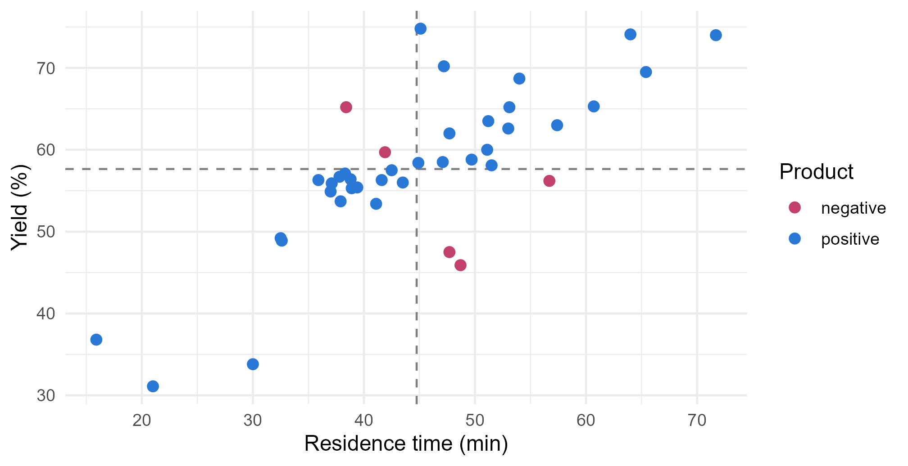
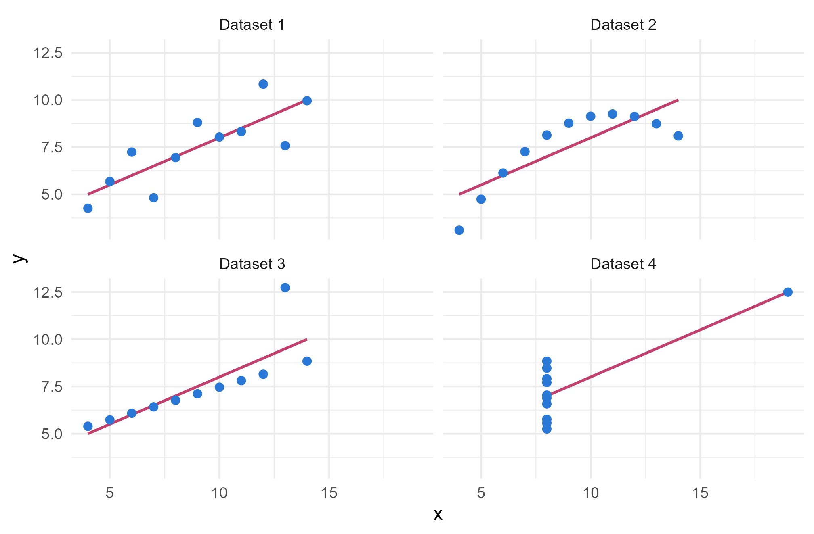
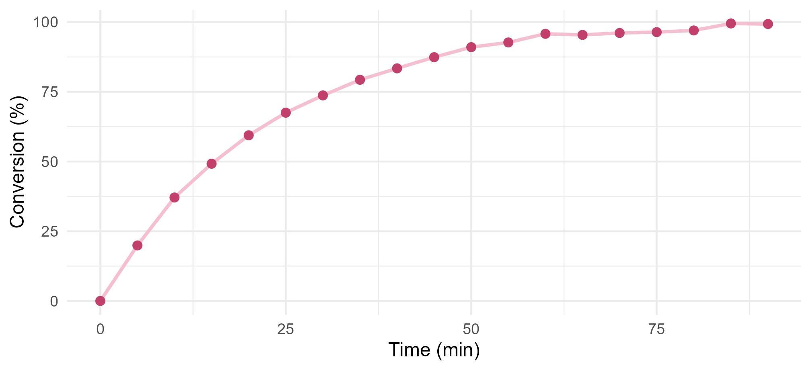
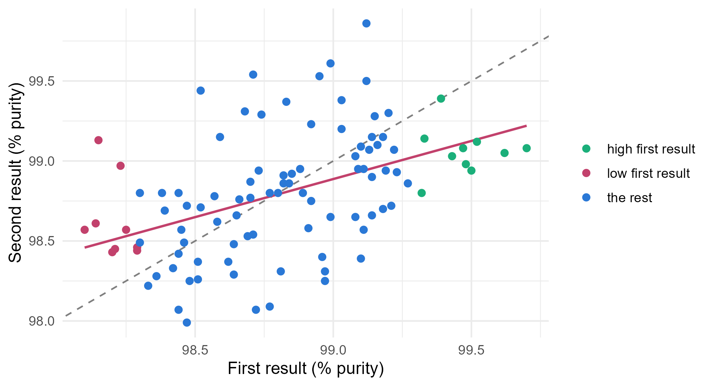

Module 2 · Lesson 1 of 15 Week 31 of 160 About 5–7 hours
Correlation
How strongly two measurements move together, and what that does and doesn’t tell you
Revisit Pearson’s correlation as a slope of z-scores, see what it misses, use Spearman’s rank correlation for curved trends, test and estimate a correlation, and learn why correlation isn’t causation and how regression to the mean fools people.
Welcome to Module 2! This module is about one big question: how does a response depend on the things you can set or measure? How does yield depend on temperature and residence time? How does absorbance depend on concentration? Does a new catalyst really beat the old one? The tools for answering, regression and analysis of variance, are the workhorses of applied statistics, and almost every later module builds on them.
We start with the simplest summary of a relationship: the correlation. You met it in Lesson 0.7. This lesson takes a closer look: what it measures, what it misses, how sure you can be about it, and two famous ways it fools people.
Correlation is the first date of statistics: it tells you two variables get along, but not why. Let’s find out how much one number can (and can’t) tell you!
In this lesson you’ll:
- see the correlation as a covariance in standard units, and as the slope of z-scores
- learn what the correlation misses: curves, outliers and narrow ranges
- use Spearman’s rank correlation for curved but steady trends
- test a correlation and put a confidence interval around it
- see why correlation isn’t causation
- meet regression to the mean, and stop it from fooling you
Back to the March batches
Here are the 40 batches from the March campaign, the same ones you met in Modules 0 and 1. Longer residence time went with higher yield:
batches <- read_csv("data/batches.csv", show_col_types = FALSE)
cor(batches$residence_min, batches$yield_pct)
#> [1] 0.7716611Where does 0.77 come from? Start with the covariance. For each batch, multiply how far its residence time is from the average residence time by how far its yield is from the average yield, then average those products (dividing by n - 1, as for the variance):
s_{xy} = \frac{1}{n-1} \sum_{i=1}^{n} (x_i - \bar{x})(y_i - \bar{y})
A batch with a long residence time and a high yield gives a positive product, and so does one that’s short on both. Mixed batches give negative products. Here are the batches split at the two averages, colored by the sign of their product:
batches |>
mutate(product = if_else((residence_min - mean(residence_min)) * (yield_pct - mean(yield_pct)) > 0,
"positive", "negative")) |>
ggplot(aes(x = residence_min, y = yield_pct, color = product)) +
geom_vline(xintercept = mean(batches$residence_min), linetype = "dashed", color = "grey50") +
geom_hline(yintercept = mean(batches$yield_pct), linetype = "dashed", color = "grey50") +
geom_point(size = 2.4) +
scale_color_manual(values = c(positive = "#2a78d6", negative = "#C2416C")) +
labs(x = "Residence time (min)", y = "Yield (%)", color = "Product") +
theme_minimal(base_size = 12)
Most batches sit in the two “positive” corners, so the covariance is positive. But its size depends on the units: in minutes and percent it’s 84.5, and in seconds it would be 60 times bigger. Dividing by both standard deviations removes the units, and that’s the correlation:
r = \frac{s_{xy}}{s_x \, s_y}
It always lies between −1 and 1. Another way to see it: if you turn both variables into z-scores, r is the slope of the line through them. A batch one standard deviation above average in residence time is predicted to be r = 0.77 standard deviations above average in yield. Keep that in mind. It’s the seed of the next lesson.
Your turn. Compute the correlation from the covariance: divide cov() by the two standard deviations.
The two standard deviations are sd(batches$residence_min) and sd(batches$yield_pct).
cov(batches$residence_min, batches$yield_pct) / (sd(batches$residence_min) * sd(batches$yield_pct))0.77, exactly what cor() gives.
What r can’t see
The correlation measures how close the points lie to a straight line. That’s all it measures, and it’s easy to ask too much of it. Remember Anscombe’s quartet from Lesson 0.5? Here it is again, this time with each dataset’s best-fitting line:
anscombe |>
pivot_longer(everything(), names_to = c(".value", "set"), names_pattern = "(.)(.)") |>
ggplot(aes(x = x, y = y)) +
geom_smooth(method = "lm", formula = y ~ x, se = FALSE, color = "#C2416C", linewidth = 0.8) +
geom_point(size = 2, color = "#2a78d6") +
facet_wrap(~ paste("Dataset", set)) +
theme_minimal(base_size = 12)
Dataset 1 is an ordinary scatter around a line. Dataset 2 is a perfect curve. In dataset 3, one outlier tilts an otherwise perfect line. In dataset 4, a single point creates the whole relationship. Yet all four have the same line, and the same correlation, 0.816. Four different stories, one number.
So watch out for:
- Curves. A strong curved relationship can have a small correlation. In Lesson 0.7,
cor(x, x^2)forxfrom −5 to 5 was exactly 0. - Outliers. One unusual point can make a correlation, or break it. Add a single batch with 120 minutes of residence and a yield of 40% to the March data, and the correlation falls from 0.77 to 0.31. You’ll try that in the next step.
- A narrow range. If you only look at batches whose residence times are close together, the relationship gets lost in the batch-to-batch scatter. You’ll see this next.
Your turn. Compute the correlation between residence time and yield for only the batches with a residence time from 40 to 55 minutes.
Inside summarise(), you can use the column names directly: cor(residence_min, yield_pct).
batches |>
filter(residence_min >= 40, residence_min <= 55) |>
summarise(n = n(), r = cor(residence_min, yield_pct))Only 0.27, for the 19 batches in that window. Residence time matters just as much as before, but over a 15-minute range its effect is small next to everything else that moves the yield. So a correlation describes a relationship over the range of the data. Engineers see this all the time: a variable that’s held tightly in control looks unimportant in plant data, precisely because it’s well controlled.
Spearman’s rank correlation
Here’s a run in a batch reactor, with a sample taken every 5 minutes. The conversion climbs quickly and then levels off as the reactant runs out:
conversion <- read_csv("data/conversion.csv", show_col_types = FALSE)
ggplot(conversion, aes(x = time_min, y = conversion_pct)) +
geom_line(color = "#F4C0D1", linewidth = 1) +
geom_point(size = 2.2, color = "#C2416C") +
labs(x = "Time (min)", y = "Conversion (%)") +
theme_minimal(base_size = 12)
The relationship is as strong as relationships get: later samples always have a higher conversion, apart from a couple of tiny wiggles near the end. But it’s curved, so Pearson’s correlation is only 0.89.
Spearman’s rank correlation asks a different question: do the two variables go up together, in a straight line or not? It replaces each variable by its ranks (1 for the smallest, 2 for the next, and so on) and computes Pearson’s correlation of the ranks. A relationship that always goes up, however it curves, gets a Spearman correlation of 1. And because ranks don’t care how far out an extreme value is, Spearman’s correlation is much less sensitive to outliers.
A third option, Kendall’s tau, compares the number of pairs of points that are in the same order on both variables with the number that are in opposite orders. All three come from the same function: cor(x, y, method = "pearson") (the default), "spearman" or "kendall".
Your turn. Compare Pearson’s and Spearman’s correlations for the conversion run.
The method’s name goes in quotes: method = "spearman".
c(pearson = cor(conversion$time_min, conversion$conversion_pct),
spearman = cor(conversion$time_min, conversion$conversion_pct, method = "spearman"))0.89 against 0.996. Spearman’s correlation sees an almost perfectly steady rise. Pearson’s is held back by the curve.
Your turn. Now the outlier. Add one made-up batch to the March data, with 120 minutes of residence and a yield of 40%, and compute both correlations.
As before, method = "spearman".
extra <- tibble(residence_min = 120, yield_pct = 40)
with_extra <- bind_rows(select(batches, residence_min, yield_pct), extra)
c(pearson = cor(with_extra$residence_min, with_extra$yield_pct),
spearman = cor(with_extra$residence_min, with_extra$yield_pct, method = "spearman"))One batch out of 41 drags Pearson’s correlation from 0.77 down to 0.31. Spearman’s only falls from 0.72 to 0.62, because to the ranks, the odd batch is simply “the longest one”, not “60 minutes longer than any other”.
Which one should you report? If the relationship looks straight and has no wild points, Pearson’s. If it’s curved but steady, or has outliers, Spearman’s. And if it isn’t steady at all (up, then down), neither one: describe the shape instead.
Is the correlation real?
Our 40 batches are a sample. A different month would give different batches, and a different correlation. So, as with any estimate, two questions follow: could the true correlation, which we call \rho (the Greek letter rho), be zero? And what range of values is plausible?
cor.test() answers both. It tests H_0: \rho = 0 with a t statistic,
t = \frac{r\sqrt{n-2}}{\sqrt{1-r^2}}, \qquad \text{with } n - 2 \text{ degrees of freedom,}
and gives a 95% confidence interval for \rho:
cor.test(batches$residence_min, batches$yield_pct)
#>
#> Pearson's product-moment correlation
#>
#> data: batches$residence_min and batches$yield_pct
#> t = 7.4789, df = 38, p-value = 5.584e-09
#> alternative hypothesis: true correlation is not equal to 0
#> 95 percent confidence interval:
#> 0.6057655 0.8732572
#> sample estimates:
#> cor
#> 0.7716611With r = 0.77 and 40 batches, t = 7.48 and the p-value is tiny. The true correlation is somewhere from 0.61 to 0.87. Notice that the interval isn’t centered on 0.77: it stretches further down than up, because correlations can’t go past 1. The next “Go deeper” box explains how it’s built.
Your turn. Is the yield related to the temperature? Test the correlation between temp_C and yield_pct. Two batches have no temperature, and cor.test() leaves them out on its own.
The temperature column is temp_C.
cor.test(batches$temp_C, batches$yield_pct)r = 0.20, with a p-value of 0.22. These 38 batches can’t rule out a zero correlation. But the interval, from −0.12 to 0.49, can’t rule out a moderate one either. “Not significant” doesn’t mean “no relationship”. It means the data aren’t enough to tell.
NoteGo deeper: Fisher’s z transformation
Near ±1, the sampling distribution of r is squashed against the boundary and badly skewed, so “estimate ± 2 standard errors” doesn’t work. Ronald Fisher found a transformation that fixes this:
z = \tanh^{-1}(r) = \tfrac{1}{2} \ln\!\left(\frac{1+r}{1-r}\right).
It stretches the scale near ±1, and z is close to normally distributed with a standard error of 1/\sqrt{n-3}, whatever the true correlation. So you build the interval on the z scale, z \pm 1.96/\sqrt{n-3}, and turn both ends back into correlations with \tanh. That’s what cor.test() does, and why its interval is lopsided.
The same transformation lets you compare two correlations, or test \rho against a value other than 0. And the t-test above is exactly the t-test for the slope in a simple regression, which you’ll meet in Lesson 3.
Your turn. Build the 95% interval for the residence-time correlation by hand, with Fisher’s z. Use 1.96 for the normal quantile.
The standard error on the z scale is 1/\sqrt{n - 3}.
r <- cor(batches$residence_min, batches$yield_pct)
n <- 40
z <- atanh(r)
se <- 1 / sqrt(n - 3)
tanh(z + c(-1, 1) * 1.96 * se)From 0.61 to 0.87, the same interval that cor.test() printed.
Correlation isn’t causation
You’ve heard this one. But it’s worth knowing the specific ways a correlation can appear without one variable causing the other:
- A common cause. In the March batches, more alarms go with lower yields (r = -0.41). Do alarms lower the yield? No: alarms fire during process upsets, like a hiccup in the cooling water, and the upsets lower the yield. Switching the alarms off wouldn’t help. A variable that drives both, like the upsets here, is called a confounder or lurking variable.
- Reverse causation. Suppose that batches that get extra lab tests turn out to have worse purity. The tests don’t make the product dirty: the lab tests batches more when they look off.
- Selection. If you only study the batches that were shipped to customers, the ones that failed QC are missing, and the relationships you see can be distorted.
- Chance. Look at enough pairs of variables, and some will be correlated by luck alone. The first challenge below shows how easily that happens in small samples.
How do you get at causes, then? The most reliable way is an experiment: you set the residence time yourself, at random, so that nothing else can line up with it. Lessons 13 and 14 are about analyzing experiments. When you can only observe, you can measure the likely confounders and adjust for them. That’s what multiple regression does, starting in Lesson 5. The second challenge gives you a first taste.
“Correlation isn’t causation” isn’t a reason to ignore correlations! It’s a reason to ask: what else could have produced this?
Regression to the mean
The lab analyzes every sample twice, as two independent runs on the gas chromatograph. Here are 100 samples, with the first result on the x axis and the second on the y axis:
duplicates <- read_csv("data/duplicates.csv", show_col_types = FALSE)
duplicates |>
mutate(group = case_when(first_pct < 98.3 ~ "low first result",
first_pct > 99.3 ~ "high first result",
TRUE ~ "the rest")) |>
ggplot(aes(x = first_pct, y = second_pct)) +
geom_abline(slope = 1, intercept = 0, linetype = "dashed", color = "grey50") +
geom_smooth(method = "lm", formula = y ~ x, se = FALSE, color = "#C2416C", linewidth = 0.8) +
geom_point(aes(color = group), size = 2) +
scale_color_manual(values = c("low first result" = "#C2416C", "high first result" = "#1baf7a", "the rest" = "#2a78d6")) +
labs(x = "First result (% purity)", y = "Second result (% purity)", color = NULL) +
theme_minimal(base_size = 12)
The dashed line is where the second result equals the first. The rose line is the fitted line, and it’s flatter: samples with a low first result tend to come back higher, and samples with a high first result tend to come back lower. QC noticed the first half of this: “every sample we re-test after a low result improves! Is the first run biased low?”
It isn’t. The first and second results average 98.82% and 98.80%. What’s going on is regression to the mean. Every result is the sample’s true purity plus some measurement error. A result far below average is probably a sample that really is low, plus an analysis that happened to err downward. The true purity shows up again in the second analysis, but the bad luck doesn’t, so the second result is usually closer to the average. Whenever two measurements are imperfectly correlated (here r = 0.47), extreme values on the first tend to be less extreme on the second.
This fools people constantly. The plant praises the operator with the best yields this month, and next month their yields slip. It has a word with the operator with the worst yields, and theirs improve. Conclusion: telling people off works better than praise? No: both are regression to the mean. The same goes for any fix you try only on your worst batches, worst machines or sickest patients. They’d usually improve anyway. To know if the fix works, you need a comparison group that didn’t get it.
And this is where regression got its name. In the 1880s, Francis Galton noticed that very tall parents tend to have children who are tall, but less extremely so, and called it “regression towards mediocrity”. The fitted line was his tool for describing it, and the name stuck to the tool.
Your turn. Take the samples whose first result was below 98.3%. Compare the mean of their first results with the mean of their second results.
The second results are in second_pct.
duplicates |>
filter(first_pct < 98.3) |>
summarise(n = n(), first = mean(first_pct), second = mean(second_pct))All 9 of these samples came back higher, and their mean rose from 98.21% to 98.63%. The 10 samples with a first result above 99.3% did the opposite: their mean fell from 99.48% to 99.06%. Same analyses, same lab, no bias. Just regression to the mean.
Challenge round
Challenge 1 · Correlations from nothing. Draw two sets of 10 random numbers that have nothing to do with each other, and compute their correlation. Repeat that 10,000 times. How often is the correlation bigger than 0.5, or smaller than −0.5?
abs(r_noise) > 0.5 is TRUE for every correlation beyond ±0.5. The mean of a logical vector is the proportion of TRUEs.
set.seed(2026)
r_noise <- replicate(10000, cor(rnorm(10), rnorm(10)))
mean(abs(r_noise) > 0.5)About 14% of the time! With 10 points, a correlation of 0.5 means very little. Try 40 points instead of 10: then it happens in fewer than 1 in 1,000 tries. That’s why the test needs the sample size, and why “we found a correlation of 0.6” is meaningless until you know how many points it’s based on.
Challenge 2 · Taking residence time out. Batches with more alarms had lower yields (r = -0.41). But they also happened to be shorter (r = -0.34 between alarms and residence time), and shorter batches have lower yields anyway. How much of the alarm correlation is left once residence time is taken out? Regress both the yield and the alarms on residence time, and correlate what’s left over (the residuals). That’s called a partial correlation.
Regress the alarms on residence time, the same way: alarms ~ residence_min.
b <- filter(batches, !is.na(alarms))
yield_left <- resid(lm(yield_pct ~ residence_min, data = b))
alarms_left <- resid(lm(alarms ~ residence_min, data = b))
cor(yield_left, alarms_left)−0.25. Some of the alarm correlation was really residence time, but not all of it: batches with more alarms still have lower yields than batches of the same length. This “take the other variable out of both, then compare” trick is exactly how multiple regression works, as you’ll see in Lesson 5.
Quick quiz
1. Anscombe’s four datasets all have a correlation of 0.82. What does that tell you about their shapes?
A correlation is one number. It can’t tell a curve from a line, or a real trend from one wild point. Plot the data.
2. Over the full March campaign, residence time and yield correlate at 0.77. For batches between 40 and 55 minutes, the correlation is 0.27. Why?
The effect per minute is the same. A narrow range simply gives it less room to show. Correlations depend on the range of the data.
3. Spearman’s correlation is Pearson’s correlation computed on…
Replacing values by ranks makes it measure any steady (monotone) trend, curved or straight, and makes it resistant to outliers.
4. For temperature and yield, r = 0.20 from 38 batches, with p = 0.22 and a 95% interval from −0.12 to 0.49. What’s a fair summary?
A large p-value means the data are consistent with zero. The wide interval shows they’re consistent with a fair amount more, too.
5. Batches with more alarms have lower yields. Should the plant switch off its alarms to raise yields?
The alarms are a symptom, not a cause. A common cause, like a cooling problem, drives both.
6. The plant tried a new stirring procedure on its 10 lowest-yield batches from last month. Their next batches were better. What can you conclude?
That’s regression to the mean. To see whether the procedure helps, compare it with similar batches that didn’t get it, ideally chosen at random.
Wrap-up
You can now read a correlation like a statistician! Here’s what you’ve learned:
- The correlation is the covariance in standard units, r = s_{xy}/(s_x s_y), and the slope of the z-scores. It measures how close the points are to a straight line.
- What it misses: curves, outliers and narrow ranges can all fool it. Anscombe’s quartet shows four different pictures with one correlation. Always plot.
- Spearman’s correlation works on ranks, so it measures any steady trend and resists outliers. Kendall’s tau is a cousin.
- Inference:
cor.test()gives a t-test of \rho = 0 and a confidence interval built with Fisher’s z. Small samples produce big correlations by chance. - Causation: a correlation can come from a common cause, reverse causation, selection or chance. Experiments, or adjusting for confounders, get you closer to causes.
- Regression to the mean: extreme results tend to be followed by less extreme ones whenever two measurements are imperfectly correlated. Compare against a control group before crediting a fix.
TipPractice in RStudio (optional, about an hour)
Download batches.csv and duplicates.csv into your project’s data-raw/ folder.
- Many scatterplots at once. Run
pairs(batches[, c("temp_C", "pressure_bar", "residence_min", "alarms", "yield_pct", "purity_pct")]). Then install the GGally package and tryGGally::ggpairs()on the same columns. Which pairs look related? - Kendall’s tau. Compute all three correlations (Pearson, Spearman and Kendall) for residence time and yield. Then use
cor.test(..., method = "spearman")to test the Spearman correlation. - Measurement error weakens correlations. Simulate 1,000 “true” purities with
rnorm(1000, 98.8, 0.25), and a yield that depends on them. Correlate the yield with the true purity, then with the purity plus measurement error (rnorm(1000, 0, 0.3)). How much weaker is the second correlation? This is called attenuation, and the duplicates show how big the error is. - Regression to the mean in sport. Find the points scored by a sports league’s teams in two consecutive seasons (many leagues publish them). Do the best teams of the first season tend to do a little worse in the second?
NoteKey words from this lesson
- Covariance
- The average product of two variables’ deviations from their means. Its sign shows the direction of a relationship, and its size depends on the units.
- Pearson’s correlation (r)
- The covariance divided by both standard deviations. It measures the strength of a straight-line relationship, from −1 to 1.
- Spearman’s rank correlation
- Pearson’s correlation of the ranks. It measures any steady (monotone) relationship and resists outliers.
- Kendall’s tau
- A rank correlation based on counting pairs of points that are in the same order on both variables.
- Fisher’s z transformation
- z = \tanh^{-1}(r), which makes the sampling distribution of a correlation close to normal, with standard error 1/\sqrt{n-3}.
- Confounder (lurking variable)
- A variable that affects both variables in a relationship, so they’re correlated without one causing the other.
- Partial correlation
- The correlation between two variables after the effect of a third has been removed from both.
- Regression to the mean
- The tendency of extreme measurements to be followed by less extreme ones, whenever two measurements are imperfectly correlated.
NoteWant to read more?
- Penn State STAT 501, Lesson 1: Simple Linear Regression. Section 1.6 covers the correlation coefficient and section 1.9 its hypothesis test.
- Introduction to Modern Statistics, “Linear regression with a single predictor”. Its correlation section has more pictures of what different values of r look like.
- Francis Anscombe, “Graphs in statistical analysis”, The American Statistician 27 (1973). The short paper that introduced the quartet, and still a great read.
- Daniel Kahneman, Thinking, Fast and Slow, chapter 17, “Regression to the mean”. The famous story about the flight instructors who thought that shouting worked better than praise.